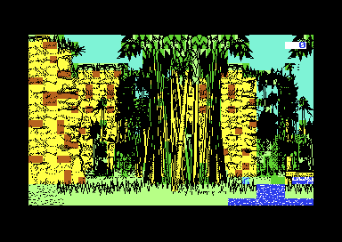
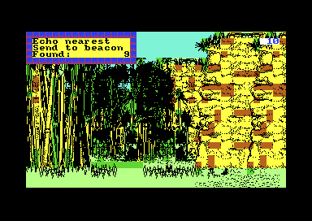
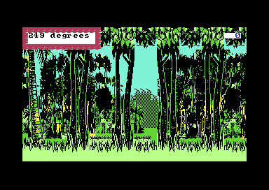

<meta charset="utf-8">
<meta name="viewport" content="width=device-width, initial-scale=1">
<title>{{title}}</title>
<link rel="preconnect" href="https://fonts.googleapis.com">
<link rel="stylesheet" href="https://fonts.googleapis.com/css2?family=Lato:wght@400;700;900&family=IBM+Plex+Mono:wght@400;500&display=swap">
<style>
:root{
  --bg:#23262d; --paper:#e9e7e1; --surface:#ffffff; --surface-2:#f1efea; --line:#d5d3cc; --line-soft:#e0ded8;
  --ink:#2f3136; --ink-soft:#55585f; --ink-mute:#80838a;
  --link:#1f5fa8; --link-hover:#154480; --accent:#1f5fa8;
  --amber:#c25a00; --cyan:#1f5fa8; --coral:#d04a3a; --green:#2a8a4a; --violet:#4a5bd6; --hl:#fff0c2;
  --chip:#2f3136; --chip-ink:#ffffff;
  --c64blue:#40318d; --c64grey:#686868;
  --fd:'Lato',system-ui,sans-serif; --fb:'Lato',system-ui,sans-serif; --fm:'IBM Plex Mono',ui-monospace,Menlo,monospace;
  --col:1080px; --gx:68px; --fs:17px; --lh:1.6; --hw:900; --h1:46px; --h2:26px; --sy:48px; --pp:26px; --r:10px;
  --plate-shadow:0 1px 2px rgba(0,0,0,.05),0 4px 14px rgba(0,0,0,.05);
}
*{box-sizing:border-box}
html{background:var(--bg);min-height:100%}
body{background:var(--paper);color:var(--ink);font-family:var(--fb);font-size:var(--fs);line-height:var(--lh);max-width:var(--col);margin:0 auto;min-height:100vh;padding:0 0 4rem}
h1,h2,h3{font-weight:var(--hw);letter-spacing:-.01em;text-wrap:balance;color:var(--ink);margin:0}
.wrap{padding:0 var(--gx)}
.hero{padding:48px var(--gx) 8px;text-align:left}
.eyebrow{font-family:var(--fm);font-size:12px;letter-spacing:.08em;text-transform:uppercase;color:var(--ink-mute);margin:0 0 10px}
.hero h1{font-size:var(--h1);line-height:1.15;letter-spacing:-.02em;margin:0 0 14px}
.hero .sub{margin:0 0 .6em;color:var(--ink-soft)}
section{padding:var(--sy) 0 24px}
section:last-of-type{border-bottom:none}
.fig{font-family:var(--fm);font-size:12px;letter-spacing:.08em;text-transform:uppercase;color:var(--ink-mute);margin:0 0 10px}
h2.t{font-size:var(--h2);margin-bottom:12px}
.lede{color:var(--ink-soft);margin:0 0 30px}
.plate{background:var(--surface);border:1px solid var(--line);border-radius:var(--r);padding:var(--pp);box-shadow:var(--plate-shadow)}
.cap{font-size:14px;color:var(--ink-mute);margin-top:14px;line-height:1.55}
.cap b{color:var(--ink);font-weight:700}
code{font-family:var(--fm);font-size:.82em;background:var(--chip);color:var(--chip-ink);border-radius:4px;padding:2px 6px;overflow-wrap:break-word;-webkit-box-decoration-break:clone;box-decoration-break:clone}
.ex-pair{display:flex;gap:16px;flex-wrap:wrap;align-items:flex-start}
.ex-pair figure{margin:0;flex:1 1 300px}
.ex-pair img,.ex-pair canvas{width:100%;image-rendering:pixelated;display:block;border-radius:4px;background:#000}
.ex-pair figcaption{font-size:13px;color:var(--ink-mute);margin-top:6px}
.ex-bar{display:flex;gap:8px;flex-wrap:wrap;align-items:center;margin:14px 0 0;font-family:var(--fm);font-size:13px}
.ex-bar button,.ex-bar select,.ex-bar input{font-family:var(--fm);font-size:13px;padding:6px 10px;border:1px solid var(--line);border-radius:6px;background:var(--surface-2);color:var(--ink);cursor:pointer}
.ex-bar input{cursor:text;width:16em}
.ex-bar button:hover{background:#e6e3dc}
.ex-read{font-family:var(--fm);font-size:13px;color:var(--ink-soft);margin-top:10px;min-height:3em;white-space:pre-wrap}
.ex-tab{border-collapse:collapse;font-size:14px;width:100%}
.ex-tab th,.ex-tab td{border-bottom:1px solid var(--line-soft);padding:6px 8px;text-align:left;vertical-align:top}
.ex-tab th{font-family:var(--fm);font-size:12px;letter-spacing:.04em;text-transform:uppercase;color:var(--ink-mute);font-weight:500}
.ex-tab td.n{text-align:right;font-family:var(--fm)}
.ex-layers{display:grid;grid-template-columns:repeat(4,1fr);gap:10px}
.ex-layers canvas{width:100%;image-rendering:pixelated;border-radius:4px;display:block}
.ex-layers div{font-family:var(--fm);font-size:12px;color:var(--ink-mute);margin-top:4px}
.ex-gallery{display:flex;flex-wrap:wrap;gap:10px;align-items:flex-end}
.ex-gallery figure{margin:0;text-align:center}
.ex-gallery canvas{image-rendering:pixelated;background:#000;display:block}
.ex-gallery figcaption{font-family:var(--fm);font-size:11px;color:var(--ink-mute)}
.ex-attr{display:grid;grid-template-columns:repeat(8,1fr);gap:4px}
.ex-attr div{height:34px;border-radius:3px;display:flex;overflow:hidden;cursor:pointer;border:2px solid transparent}
.ex-attr div.sel{border-color:var(--ink)}
.ex-attr span{flex:1;display:flex;align-items:center;justify-content:center;font-family:var(--fm);font-size:16px;font-weight:700}
.ex-rose{display:flex;gap:18px;flex-wrap:wrap;align-items:flex-start}
.ex-rose canvas{border-radius:6px;background:var(--surface-2);display:block;max-width:100%}
@media (max-width:700px){:root{--gx:20px;--h1:36px}.ex-layers{grid-template-columns:repeat(2,1fr)}}
</style>
<!-- tabs -->
<header class="hero">
  <p class="eyebrow">{{year}} · {{publisher}}</p>
  <h1>{{title}}</h1>
  <p class="sub">Type the right name at a doorway and you land one step from a piece of the spaceship. The game also works out an energy refill for every doorway trip, and then throws it away.</p>
</header>
<main class="wrap">

<section id="fragments">
  <p class="fig">01 · Fragments</p>
  <h2 class="t">Secret: the right name puts you one step from a fragment</h2>
  <p class="lede">Eight of the nine fragments lie in the same places in every game, and a doorway sends a name to the same place in every game. So a name can be a shortcut.</p>
  <div class="plate">
    <div class="ex-pair">
      <figure><figcaption>Arriving at CSBBII. Fragment 9 is one cell to the north.</figcaption></figure>
      <figure><figcaption>One step north, and the objects menu says "Found: 9".</figcaption></figure>
    </div>
    <table class="ex-tab" style="margin-top:18px" id="ex-frag-tab">
      <tr><th>Fragment</th><th>East, north</th><th>Name</th><th>Then</th></tr>
    </table>
    <div class="ex-bar">
      <input id="ex-name" value="CSBBII" maxlength="31" aria-label="A place name">
      <button type="button" id="ex-try">how close does it land?</button>
    </div>
    <div class="ex-read" id="ex-name-read">Loading the listing…</div>
    <p class="cap"><b>How it was checked.</b> In the emulator, a doorway trip to CSBBII arrived at 57,921 east and 7,081 north, and one step north found fragment 9. RMOYFV arrived at 12,352 east and 56,806 north, and one step south found fragment 2. The rest of the table comes from the page's copy of the game's sums, which gives the game's own answer for 20,007 names (<code>test_names.js</code>). The fragment positions are the table <code>fragments</code> at <code>$2213</code>, the same in three new games started in the emulator.</p>
  </div>
  <p>Each fragment's position is two 16-bit numbers in the table <code>fragments</code> at <code>$2213</code>. Fragments 2 to 9 are written into the program, and only a drone moves them. Fragment 1 is the only one whose place changes from game to game. The game puts it 160 units east and 144 north of a place it picks at random, then flies the opening pass north from there. If you leave the keys alone during the pass, you land 1,296 units north of fragment 1 and 144 or 160 west of it, so it is a little east of due south, just beyond the sonar's range.</p>
  <p>A doorway turns any name into a place with two sums over its letters (<a href="index.html#doorways">How it works</a> shows them). There is no name of one to six letters that lands on a fixed fragment's own cell. For each of the eight, though, one name lands in the cell next to it, and one step finishes the trip. A doorway is not the only way in: a crash and running out of energy both ask for a name too. You still need the drones and a beacon to bring the fragments together, but you no longer need the sonar to find them.</p>
</section>

<section id="refill">
  <p class="fig">02 · Doorways and energy</p>
  <h2 class="t">Bug: the doorway works out an energy refill and never gives it</h2>
  <p class="lede">The instructions warn that energy runs low and say "There's a way of restoring it". The doorway's code works out a refill, and its last step jumps past the instructions that would store it.</p>
  <div class="plate">
    <div class="ex-bar">
      <input id="ex-refill-name" value="HOME" maxlength="31" aria-label="A place name">
      <button type="button" id="ex-refill-go">work it out</button>
    </div>
    <div class="ex-read" id="ex-refill-read"></div>
    <p class="cap"><b>How it was checked.</b> A JavaScript copy of the sum at <code>$0ED0</code>-<code>$0F31</code>, from "the landing place" on the How it works page (65,376 east, 144 north), checked against the game's own code for 20,007 names (<code>test_names.js</code>). In the emulator, a trip to HOME left the energy where it was, apart from the 15 that drawing every view costs.</p>
  </div>
  <p>After a doorway has moved you, the game works out a change to your energy (<code>name_destination</code> at <code>$0E23</code>). It takes the number of letters in the name, less 8, times 512, and from that it takes a quarter of the distance travelled, east plus north. A long name for a nearby place gives energy, and a short name for a place further off takes it. The game halves the distance twice with an instruction that treats a number over 32,767 as negative, so a trip longer than that counts as a negative distance and gives energy too. HOME, from the landing place, would give 5,814. Then the game adds the change to your energy and branches on the carry, the 6502's flag for a sum that overflowed.</p>
  <p>Both ways out of that branch go back to the walk at <code>ground_loop</code>. With the carry set, the branch goes to <code>$0F4A</code>, which is <code>JMP ground_loop</code>. Without it, the processor runs on to <code>$0F3F</code>, which is also <code>JMP ground_loop</code>. The four instructions after that jump, at <code>$0F42</code>, would store the new energy, and the processor never reaches them. So doorway trips are free, and the only energy the game ever gives back is the 2,000 you get when you run out, with a doorway's prompt (<a href="index.html#instruments">How it works</a>).</p>
</section>

<section id="bearings">
  <p class="fig">03 · Bearings</p>
  <h2 class="t">Bug: the sonar points the wrong way to anything south-west of you</h2>
  <p class="lede">The sonar and "Fix 3 nearest" give the bearing of a fragment or a beacon in degrees. In one quarter of the compass, the number is wrong by up to 90 degrees.</p>
  <div class="plate">
    <div class="ex-rose">
      <canvas id="ex-rose" width="300" height="300" aria-label="Click to place a fragment around the explorer"></canvas>
      <canvas id="ex-plot" width="390" height="316" aria-label="The bearing the game gives against the true bearing"></canvas>
    </div>
    <div class="ex-read" id="ex-rose-read">Click the compass to place a fragment.</div>
    <p class="cap"><b>How it was checked.</b> The left picture places a fragment around you: green is its true bearing, red is the one the game gives. The right picture plots the game's bearing against the true one all the way round. Both use a JavaScript copy of <code>bearing_of</code> at <code>$383F</code> and its tables, which gives the game's own answer for 100,196 pairs of distances (<code>test_bearing.js</code>). In the emulator, the sonar said 249 degrees for a fragment whose true bearing was 201, and "Fix 3 nearest" said 252 for a beacon at 197.</p>
  </div>
  <div class="ex-pair" style="margin-top:18px">
    <figure><figcaption>The sonar, for a fragment 304 units west and 800 south: true bearing 201.</figcaption></figure>
    <figure><figcaption>"Fix 3 nearest". The second beacon is 200 west and 640 south, at 197 degrees.</figcaption></figure>
  </div>
  <p>The game works out a bearing in two steps (<code>bearing_of</code> at <code>$383F</code>). First it finds the angle between the line to the target and the nearest north-south line, from 0 to 90, using a table of tangents at <code>$39B3</code>. Then it turns that angle into a compass bearing for the quarter the target is in, using three numbers at <code>$3A37</code>. North-east is the angle itself, south-east is 180 less it, and north-west is 360 less it.</p>
  <p>South-west should be 180 plus the angle. The game uses 270 less it, which mirrors the quarter about the line to the south-west. A target exactly south-west reads right, at 225. Everywhere else in that quarter the reading moves away from the truth: a fragment just west of due south reads almost due west. A player who follows the sonar there walks off at the wrong angle. As they walk, the fragment's direction swings round towards the south-east, where the reading is right again, so they still get there by a longer road.</p>
</section>

<section id="unused">
  <p class="fig">04 · Unused pictures</p>
  <h2 class="t">Secret: pictures the jungle never shows</h2>
  <div class="plate">
    <div class="ex-gallery" id="ex-unused"></div>
    <p class="cap">Each picture is drawn by the game's own routine (<code>draw_image</code> at <code>$2F99</code>) from the bytes in the listing, three times the size of the screen's pixels.</p>
  </div>
  <p>Objects 20, 41 and 42 have records in <code>object_records</code> at <code>$363F</code>, but the scenery lists never name them, so the game never draws them. Object 20 is the edge of some water. Object 41 is fragment 1's own picture, and object 42 is part of the beacon's mast. Two more pictures, at <code>$986A</code> and <code>$9AFE</code>, have no record at all: a post and a rail over water, one wider than the other.</p>
</section>

<section id="open">
  <p class="fig">05 · Open questions</p>
  <h2 class="t">What is not settled</h2>
  <p>The game's credits say "program: Graham Relf", and Relf writes that he programmed Explorer, on the Spectrum. GameBase64 names Brian O'Shaughnessy as the programmer of the Commodore 64 version. The code keeps the Spectrum's colour bytes everywhere, which says it is a conversion, but not who converted it.</p>
  <p>Whether the Spectrum version stores the doorway's refill is not known. If it does, the jump at <code>$0F3F</code> was a slip in the conversion.</p>
</section>

</main>
<footer style="margin:16px 0 0;padding:22px var(--gx) 0;border-top:1px solid #e0ded8;font-family:'IBM Plex Mono',ui-monospace,Menlo,monospace;font-size:12px;color:#80838a"><a href="https://github.com/gamesexplained/gamesexplained" style="color:#1f5fa8;text-decoration:none">GitHub</a> · <a href="https://discord.gg/3V9GWyRDWV" style="color:#1f5fa8;text-decoration:none">Discord</a><br>© Games Explained contributors. Write-ups, facts and symbol maps are available under <a href="https://creativecommons.org/licenses/by-sa/4.0/" style="color:#1f5fa8;text-decoration:none">CC BY-SA 4.0</a>; code under <a href="https://opensource.org/licenses/MIT" style="color:#1f5fa8;text-decoration:none">MIT</a></footer>
<script src="../../lib/c64.js"></script>
<script src="../../lib/cpu6502.js"></script>
<script>
/* ex-names */
// A copy of name_destination's sums ($0E48-$0ECE): a name, as read_name keeps it (upper case,
// a zero after it), to the position a doorway sends the explorer to.
function namePlace(name) {
  const c = [];
  for (const ch of name.toUpperCase()) c.push(ch.charCodeAt(0) & 0xFF);
  function add(v, k) {                 // add the byte, then turn 17 bits (the carry too) five places
    let s = v + k, carry = s >>> 16; s &= 0xFFFF;
    for (let i = 0; i < 5; i++) { const out = s >>> 15; s = ((s << 1) & 0xFFFF) | carry; carry = out; }
    return s;
  }
  let x = 0, y = 0;
  for (let i = 0; i < c.length; i++) x = add(x, c[i]);
  for (let i = c.length; i >= 1; i--) y = add(y, i === c.length ? 0 : c[i]);
  return { x, y };
}
// end of ex-names
</script>
<script>
/* ex-refill */
// A copy of name_destination's energy sum ($0ED0-$0F31), which the game works out and never stores.
// len: the name's length; cx, cy: the grid cell before the trip (cell_x, cell_y); x, y: the place
// the name gives. Returns the change as a 16-bit number, negative from $8000 up.
function doorwayEnergy(len, cx, cy, x, y) {
  const absDiff = (a, b) => { const d = (a - b) & 0xFFFF; return d & 0x8000 ? -d & 0xFFFF : d; };   // abs_diff, $3E98
  let dist = (absDiff(cx, x) + absDiff(cy, y)) & 0xFFFF;
  for (let i = 0; i < 2; i++) dist = (dist >> 1) | (dist & 0x8000);    // halved twice, keeping bit 15
  return (((len - 8) * 2 & 0xFF) * 256 - dist) & 0xFFFF;
}
// end of ex-refill
</script>
<script>
/* ex-bearing */
// A copy of bearing_of ($383F): the bearing in degrees, clockwise from north, of dx east and dy
// north (16 bits each, negative from $8000 up). tab: tangent_table ($39B3, 64 tangents times 256,
// then 64 angles); offs: quadrant_offsets ($3A37: 180, 360 and 270, low bytes then high bytes).
// The south-west quarter keeps the game's 270 less the angle.
function makeBearing(tab, offs) {
  return function bearingOf(dx, dy) {
    dx &= 0xFFFF; dy &= 0xFFFF;
    const q = ((dx >> 15) << 1) | (dy >> 15);
    let a = dx & 0x8000 ? (0x10000 - dx) & 0xFFFF : dx, b = dy & 0x8000 ? (0x10000 - dy) & 0xFFFF : dy;
    let dyLarger = false;
    if (a < b) { const t = a; a = b; b = t; dyLarger = true; }
    let idx = 32, step = 16;
    while (step) {                     // five halving steps through the tangents (mul_8x16 each)
      const t = Math.floor(a * tab[idx] / 256) & 0xFFFF;
      idx = (t < b ? idx + step : idx - step) & 0xFF;
      step >>= 1;
    }
    let ang = tab[(idx + 64) & 0xFF];
    if (!dyLarger) ang = (90 - ang) & 0xFF;
    if (q === 0) return ang;
    return ((offs[q - 1] | offs[q + 2] << 8) - ang) & 0xFFFF;
  };
}
// end of ex-bearing
</script>
<script>
(function () {
  const $ = id => document.getElementById(id);
  const say = (id, t) => { $(id).textContent = t; };
  if (typeof C64 === 'undefined' || typeof C64Cpu === 'undefined') {
    say('ex-name-read', 'These widgets need the site\'s scripts (c64.js and cpu6502.js), which load only from the built site.');
    return;
  }
  const NAMES = ['RMOYFV', 'SCSAUD', 'SNVDRR', 'NGVZVW', 'CGWZXN', 'BBQJC', 'BVMZRZ', 'CSBBII'];
  const DIR = { '0,1': 'north', '0,-1': 'south', '1,0': 'east', '-1,0': 'west', '1,1': 'north-east', '-1,1': 'north-west', '1,-1': 'south-east', '-1,-1': 'south-west' };
  const START = [65376, 144];
  let L, F = [], bearingOf;
  const sdiff = (a, b) => { const d = (a - b) & 0xFFFF; return d & 0x8000 ? d - 0x10000 : d; };

  function nearest(p) {
    let best = null;
    F.forEach((f, i) => {
      const cx = sdiff(f[0] & 0xFFF0, p.x & 0xFFF0) / 16, cy = sdiff(f[1] & 0xFFF0, p.y & 0xFFF0) / 16;
      const d = Math.abs(sdiff(f[0], p.x)) + Math.abs(sdiff(f[1], p.y));
      if (!best || d < best.d) best = { n: i + 2, d, cx, cy };
    });
    return best;
  }
  function fragTable() {
    const tab = $('ex-frag-tab');
    NAMES.forEach((nm, i) => {
      const p = namePlace(nm), b = nearest(p), tr = document.createElement('tr');
      const then = b.cx === 0 && b.cy === 0 ? 'you are on it' : Math.max(Math.abs(b.cx), Math.abs(b.cy)) === 1 ? 'one step ' + DIR[b.cx + ',' + b.cy] : `${b.cx} cells east, ${b.cy} north`;
      tr.innerHTML = `<td class="n">${i + 2}</td><td class="n">${F[i][0].toLocaleString('en-GB')}, ${F[i][1].toLocaleString('en-GB')}</td><td><code>${nm}</code></td><td>${then}</td>`;
      tab.appendChild(tr);
    });
  }
  function tryName() {
    const n = $('ex-name').value.toUpperCase().slice(0, 31);
    if (!n) { say('ex-name-read', 'Type a name of at least one letter.'); return; }
    const p = namePlace(n), b = nearest(p);
    const part = (k, pos, neg) => k ? `${Math.abs(k)} cell${Math.abs(k) === 1 ? '' : 's'} ${k < 0 ? neg : pos}` : '';
    const where = b.cx === 0 && b.cy === 0 ? 'in your cell' : [part(b.cx, 'east', 'west'), part(b.cy, 'north', 'south')].filter(Boolean).join(' and ') + ' from your cell';
    say('ex-name-read', `${n} lands at ${p.x.toLocaleString('en-GB')} east, ${p.y.toLocaleString('en-GB')} north. The nearest fixed fragment is ${b.n}, ${b.d.toLocaleString('en-GB')} units away (east plus north): ${where}.`);
  }
  function refill() {
    const n = $('ex-refill-name').value.toUpperCase().slice(0, 31);
    if (!n) { say('ex-refill-read', 'Type a name of at least one letter.'); return; }
    const p = namePlace(n), c = doorwayEnergy(n.length, START[0], START[1], p.x, p.y), v = c & 0x8000 ? c - 0x10000 : c;
    say('ex-refill-read', `${n}: ${n.length} letters, to ${p.x.toLocaleString('en-GB')} east and ${p.y.toLocaleString('en-GB')} north.\nThe game works out a change of ${v > 0 ? '+' : ''}${v.toLocaleString('en-GB')} energy, then leaves your energy as it was.`);
  }

  // The compass rose: one pixel for 10 units, north up.
  let target = [-304, -800];
  function rose() {
    const cv = $('ex-rose'), ctx = cv.getContext('2d'), W = cv.width, c = W / 2;
    ctx.clearRect(0, 0, W, W);
    ctx.strokeStyle = '#d5d3cc'; ctx.lineWidth = 1;
    ctx.beginPath(); ctx.arc(c, c, 130, 0, 2 * Math.PI); ctx.moveTo(c, 10); ctx.lineTo(c, W - 10); ctx.moveTo(10, c); ctx.lineTo(W - 10, c); ctx.stroke();
    ctx.fillStyle = 'rgba(208,74,58,.08)'; ctx.beginPath(); ctx.moveTo(c, c); ctx.arc(c, c, 130, Math.PI / 2, Math.PI); ctx.fill();
    ctx.fillStyle = '#80838a'; ctx.font = '12px IBM Plex Mono, monospace'; ctx.textAlign = 'center';
    ctx.fillText('N', c, 8 + 4); ctx.fillText('S', c, W - 2); ctx.fillText('E', W - 6, c + 4); ctx.fillText('W', 6, c + 4);
    const [dx, dy] = target, got = bearingOf(dx, dy), truth = (Math.atan2(dx, dy) * 180 / Math.PI + 360) % 360;
    const ray = (deg, col, dash) => {
      const r = deg * Math.PI / 180;
      ctx.strokeStyle = col; ctx.lineWidth = 3; ctx.setLineDash(dash);
      ctx.beginPath(); ctx.moveTo(c, c); ctx.lineTo(c + 140 * Math.sin(r), c - 140 * Math.cos(r)); ctx.stroke(); ctx.setLineDash([]);
    };
    ray(truth, '#2a8a4a', []); ray(got, '#d04a3a', [6, 5]);
    ctx.fillStyle = '#2f3136'; ctx.beginPath(); ctx.arc(c + dx / 10, c - dy / 10, 5, 0, 2 * Math.PI); ctx.fill();
    ctx.fillRect(c - 4, c - 4, 8, 8);
    say('ex-rose-read', `A fragment ${Math.abs(dx)} units ${dx < 0 ? 'west' : 'east'} and ${Math.abs(dy)} ${dy < 0 ? 'south' : 'north'}. True bearing ${truth.toFixed(0)}°; the game says ${got}°.`);
  }
  function plot() {
    const cv = $('ex-plot'), ctx = cv.getContext('2d'), W = cv.width, H = cv.height, x0 = 46, y0 = H - 40, sx = (W - x0 - 8) / 360, sy = (y0 - 8) / 360;
    ctx.fillStyle = '#80838a'; ctx.font = '11px IBM Plex Mono, monospace'; ctx.textAlign = 'center';
    ctx.strokeStyle = '#d5d3cc'; ctx.lineWidth = 1;
    for (let d = 0; d <= 360; d += 90) {
      ctx.beginPath(); ctx.moveTo(x0 + d * sx, 8); ctx.lineTo(x0 + d * sx, y0); ctx.moveTo(x0, y0 - d * sy); ctx.lineTo(W - 8, y0 - d * sy); ctx.stroke();
      ctx.fillText(String(d), x0 + d * sx, y0 + 16); ctx.textAlign = 'right'; ctx.fillText(String(d), x0 - 4, y0 - d * sy + 4); ctx.textAlign = 'center';
    }
    ctx.fillText('true bearing', x0 + 180 * sx, H - 4);
    ctx.save(); ctx.translate(9, 8 + (y0 - 8) / 2); ctx.rotate(-Math.PI / 2); ctx.fillText('the game says', 0, 0); ctx.restore();
    ctx.fillStyle = '#d04a3a';
    for (let t = 0; t < 360; t += 0.5) {
      const r = t * Math.PI / 180, g = bearingOf(Math.round(1000 * Math.sin(r)), Math.round(1000 * Math.cos(r)));
      ctx.fillRect(x0 + t * sx - 1, y0 - g * sy - 1, 2, 2);
    }
  }
  function roseClick(e) {
    const cv = $('ex-rose'), r = cv.getBoundingClientRect(), k = cv.width / r.width;
    const px = (e.clientX - r.left) * k - cv.width / 2, py = (e.clientY - r.top) * k - cv.width / 2;
    target = [Math.round(px * 10), Math.round(-py * 10)];
    if (target[0] || target[1]) rose();
  }

  // The unused pictures, drawn one at a time by draw_image ($2F99) on a blank screen.
  function unused() {
    const base = L.ram.slice();
    for (let i = 0; i < 256; i++) base[i] = base[0x0C92 + i];             // zp_init
    const ac = L.bytes(0x2F09, 128), conv = a => ac[a & 0x7F];
    const rgb = C64.PAL.map(h => [1, 3, 5].map(i => parseInt(h.substr(i, 2), 16)));
    const io = { read: a => (a === 0xD012 ? 250 : 0), write: () => {} };
    const rec = id => L.bytes(0x363F + (id - 1) * 9, 9);
    const items = [20, 41, 42].map(id => { const r = rec(id); return ['object ' + id, r[0] | r[1] << 8, r[3]]; })
      .concat([['$986A', 0x986A, 20], ['$9AFE', 0x9AFE, 20]]);
    for (const [label, img, row] of items) {
      const m = base.slice(), cpu = new C64Cpu.CPU(m, { port: 0x35, io });
      m[0x08] = 0x40; m[0x77] = 0; m[0x79] = 0;
      for (let i = 0; i < 1000; i++) m[0x4000 + i] = conv(0x28);
      m.fill(0, 0x6000, 0x6000 + 8000);
      m[0x0E] = 8; m[0x0F] = row; m[0x0C] = img & 255; m[0x0D] = img >> 8;
      cpu.call(0x2F99, {}, { maxSteps: 1e6 });
      let x0 = 40, x1 = -1, y0 = 25, y1 = -1;
      for (let cy = 0; cy < 25; cy++) for (let cx = 0; cx < 40; cx++) {
        let used = m[0x4000 + cy * 40 + cx] !== conv(0x28);
        for (let k = 0; k < 8 && !used; k++) used = m[0x6000 + (cy * 40 + cx) * 8 + k] !== 0;
        if (used) { x0 = Math.min(x0, cx); x1 = Math.max(x1, cx); y0 = Math.min(y0, cy); y1 = Math.max(y1, cy); }
      }
      if (x1 < 0) continue;
      const cv = document.createElement('canvas');
      cv.width = (x1 - x0 + 1) * 8; cv.height = (y1 - y0 + 1) * 8; cv.style.width = cv.width * 3 + 'px';
      const ctx = cv.getContext('2d'), im = ctx.createImageData(cv.width, cv.height), d = im.data;
      for (let y = 0; y < cv.height; y++) for (let x = 0; x < cv.width; x++) {
        const cx = x0 + (x >> 3), cy = y0 + (y >> 3), col = m[0x4000 + cy * 40 + cx], b = m[0x6000 + (cy * 40 + cx) * 8 + (y & 7)];
        const p = rgb[(b & (0x80 >> (x & 7))) ? col >> 4 : col & 15], o = (y * cv.width + x) * 4;
        d[o] = p[0]; d[o + 1] = p[1]; d[o + 2] = p[2]; d[o + 3] = 255;
      }
      ctx.putImageData(im, 0, 0);
      const f = document.createElement('figure'), fc = document.createElement('figcaption');
      fc.textContent = label; f.appendChild(cv); f.appendChild(fc); $('ex-unused').appendChild(f);
    }
  }

  C64.load('listing.json').then(got => {
    L = got;
    for (let i = 1; i < 9; i++) { const r = L.bytes(0x2213 + i * 4, 4); F.push([r[0] | r[1] << 8, r[2] | r[3] << 8]); }
    bearingOf = makeBearing(L.bytes(0x39B3, 128), L.bytes(0x3A37, 6));
    fragTable(); tryName(); refill(); rose(); plot(); unused();
    $('ex-try').onclick = tryName; $('ex-name').addEventListener('keydown', e => { if (e.key === 'Enter') tryName(); });
    $('ex-refill-go').onclick = refill; $('ex-refill-name').addEventListener('keydown', e => { if (e.key === 'Enter') refill(); });
    $('ex-rose').addEventListener('click', roseClick);
  }).catch(e => say('ex-name-read', 'Could not load the listing: ' + e.message));
})();
</script>
